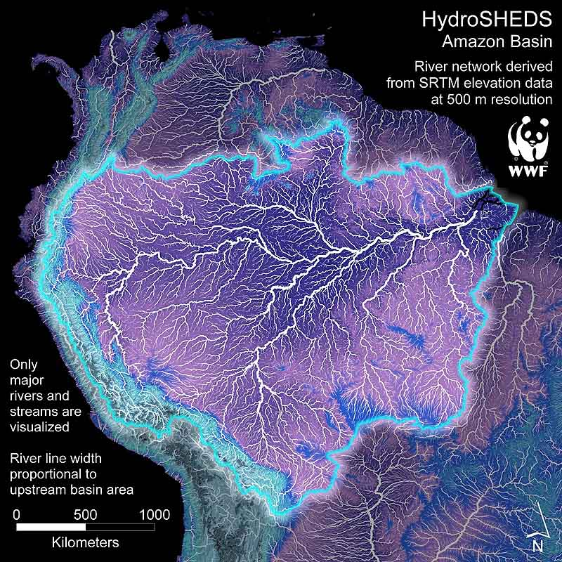
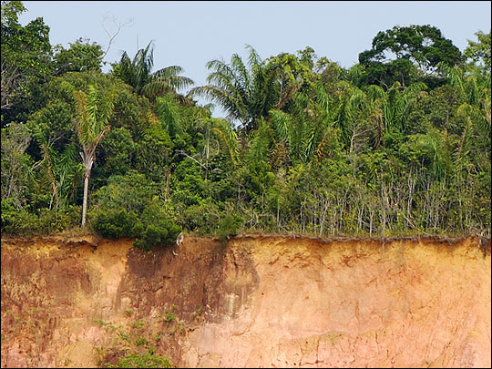
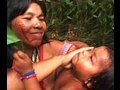
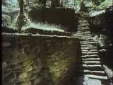
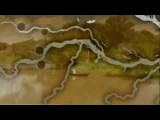
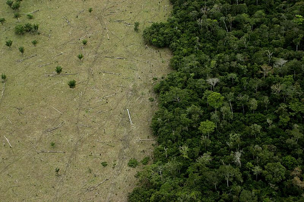
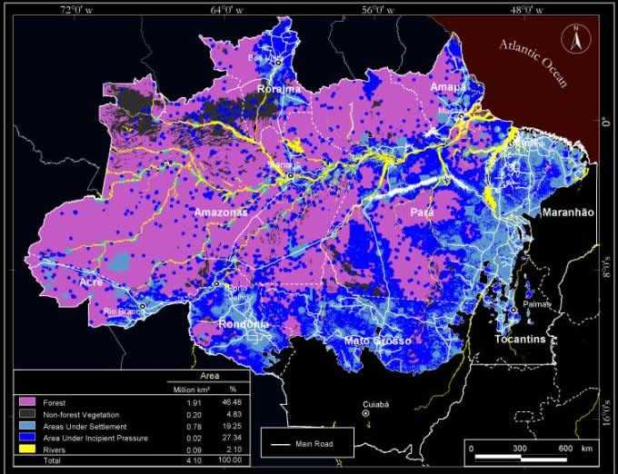
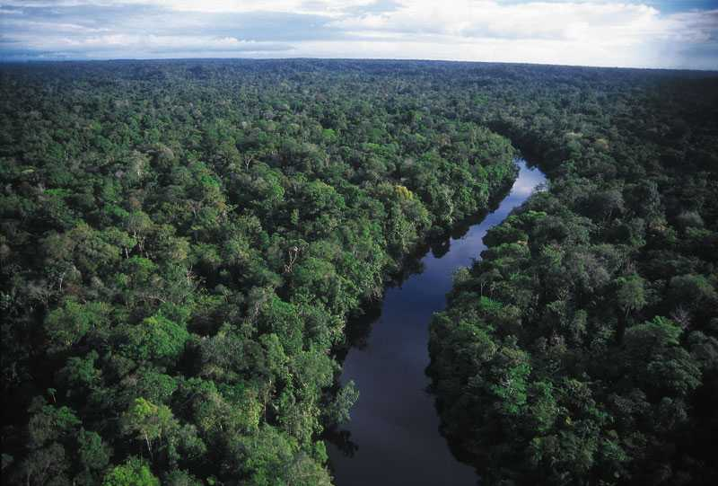

Inside the Amazon rainforest:
The region's rainforest is spread across the Amazon River Basin (approx. 6.7 million km2), a vast natural tropical area more than half of which is located in Brazil. The basin also covers parts of Bolivia, Peru, Colombia, Ecuador, Venezuela and Guyana.
A considerable number of the world's plants and animals live in the Amazon, most of which remain undiscovered by scientists. Amazon wildlife shares this huge space with some 30 million people, including more than 220 indigenous groups in the Brazilian Amazon, 40 in Peru and 10 in Ecuador. In Venezuela, some 17 indigenous languages are spoken in the Amazon part of the country. This number is dwarfed by the Bolivian and Colombian Amazon, where 33 and 52 indigenous languages respectively are in use.
Tropical Deforestation:
The organic material and nutrients in a tropical rainforest are found in the vegetation itself, not in the soil. This eroded hillside along a river in Amazonia shows the infertile soil typical of tropical environments (pinkish-tan) topped by a very thin layer of fertile soil and forest detritus (brown):

The Amazon accounts for more than half of the world's rainforest. No other ecosystem on Earth is home to so many species nor exerts such control on the carbon cycle. For years the Amazon forest acted as a vast carbon sink that absorbed one fifth of global fossil fuel emissions. But in 2005 this process was reversed.
Between May 2000 and August 2006, Brazil lost nearly 150,000 square kilometers (58,000 square miles) of forest and since 1970, over 600,000 sq km (232,000 sq mi) of Amazon rainforest have been destroyed.—Deforestation in the Amazon
Films and Video
- 
- NOSSA TERRA: OUR LAND—KA'APOR INDIAN DOCUMENTARY—An exclusive look inside the word of Kaapor People of Brazil as they struggle to keep their land and their culture. Includes a tour of the forest and how they hunt, find water, and use the forest for their survival.
- 
- From the Heart of the World—The Elder Brothers' Warning—This is the last civilization of pre-Columbian America that vanished 400 years ago. It did not die - it went into hiding. For centries the Kogi have watched us from their mountain fastness. This film is their message, and their warning... (Also see ALUNA)
- 
- THE SECRET OF EL DORADO: Terra preta—This is the story of how archaeologists have uncovered the lost civilisation behind the myth of El Dorado, but this was not a kingdom of gold. The secret of the real El Dorado was something far more valuable, something with the power to transform our world.
- A Message from Pandora
- A special feature produced by James Cameron about the battle to stop the Belo Monte Dam on the Xingu, one of the great tributaries of the Amazon River.
- Amazon: In the hands of a few
- Farmers and politicians of the Brazilian municipality of Juína (Mato Grosso state, Map) hinder Greenpeace activists, OPAN (Native Amazon Operation) members and European journalists' visit to the Enawene Nawe Indigenous Land.
Google Earth Files
- Belo Monte Dam Tour—Google Earth tour and video narrated by actress Sigourney Weaver, with technical assistance from Google Earth Outreach, in support of Brazil's Movimento Xingu Vivo Para Sempre (Xingu River Forever Alive Movement).—source
REAL TIME DATA
Forest News
Amazon Biodiversity
» FEED — SITE
Tapajós and other Amazon dams not sustainable development say reports
Videos reveal rare birds, wild monkeys, and jaguar family in oil-exploited park
Featured video: the Uncharted Amazon trailer
Photos: expedition to Amazon’s white sands may have found new primate
Photo essay: filming in the remote Amazon
New tapir? Scientists dispute biological discovery of the century
Scientists uncover five new species of 'toupee' monkeys in the Amazon
No longer 'deaf as a stump': researchers find turtles chirp, click, meow, cluck
Scientists: Neotropical otter should not be considered threatened
Camera trap captures first ever video of rarely-seen bird in the Amazon...and much more
After throwing out referendum, Ecuador approves oil drilling in Yasuni's embattled heart
Of jaguars and loggers: new film to showcase one of the least-known regions in the deep Amazon
Oil or rainforest: new website highlights the plight of Yasuni National Park
Scientist discovers a plethora of new praying mantises (pictures)
Several Amazonian tree frog species discovered, where only two existed before
Amazon trees super-diverse in chemicals
New $20,000 reporting grant explores benefits of Amazonian protected areas
Featured video: camera traps catch jaguars, anteaters, and a sloth eating clay in the Amazon rainforest
High-living frogs hurt by remote oil roads in the Amazon
Top 10 HAPPY environmental stories of 2013
"Those who refused to sell found themselves encircled by an encroaching wasteland, as whining chain saws and raging fires consumed the trees right up to the edge of their land. Their yards were overrun with vipers, bees, and rodents escaping the apocalypse, and when tractors began spraying the cleared fields, toxic clouds of pesticides drifted into their homes..."

- Last of the Amazon
- During the past 40 years, close to 20 percent of the Amazon rain forest has been cut down—more than in all the previous 450 years since European colonization began. Scientists fear that an additional 20 percent of the trees will be lost over the next two decades. If that happens, the forest's ecology will begin to unravel.
Human Pressure on the Brazilian Amazon Forests--KML

- How many tree species are there in the Amazon
and how many of them will go extinct? - The Amazon Basin has about 50,000 described vascular plant species of which approximately half are woody. Of these, approximately half are trees. This yields an estimate of 12,500 tree species in the entire Amazon Basin. Under the non-optimistic deforestation scenario 3,656 tree species (32.6%) are predicted to go extinct...But even under the optimistic deforestation scenario, 2,228 tree species (19.9%) are predicted to go extinct.

Brazil's National Institute of Amazonian Research suggests that the felling is both drying up the entire forest and helping to cause the hurricanes that have been battering the United States and the Caribbean. The hot, wet Amazon normally evaporates vast amounts of water, which rise high into the air as if in an invisible chimney. This draws in the wet north-East trade winds, which have picked up moisture from the Atlantic. This in turn controls the temperature of the ocean; as the trade winds pick up the moisture, the warm water that is left gets saltier and sinks.
Deforestation disrupts the cycle by weakening the Amazonian evaporation which drives the whole process. One result is that the hot water in the Atlantic stays on the surface and fuels the hurricanes. Another is that less moisture arrives on the trade winds, intensifying drought in the forest. "We believe there is a vicious cycle" says Dr. Antonio Nobre.
So far about a fifth of the Amazonian rainforest has been razed completely. Another 22 per cent has been harmed by logging, allowing the sun to penetrate to the forest floor drying it out. And if you add these two figures together, the total is growing perilously close to 50 per cent, which computer models predict as the "tipping point" that marks the death of the Amazon.—Dying Forest
{kind=link}
{kind=link}
{kind=link}
{kind=link}
{kind=link}